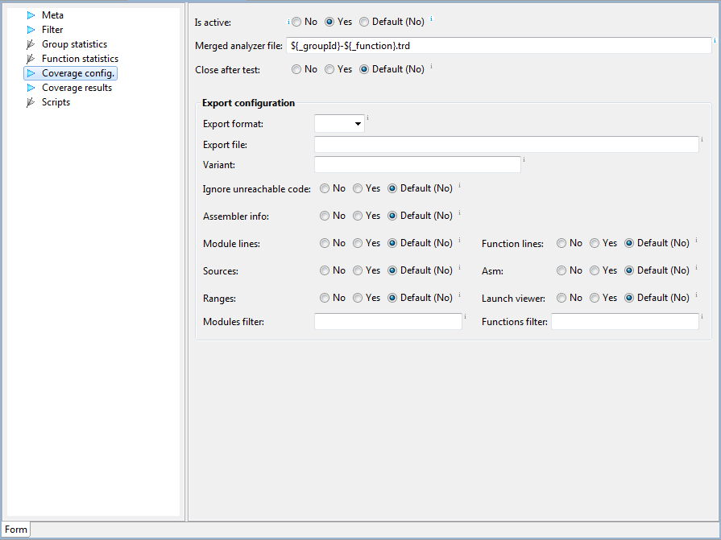

Coverage configuration
We often need to get coverage not only on a function level, but
also on module or partition level. This can be achieved by
activating and configuring coverage in the group coverage section.

Coverage for a group is obtained by merging coverage files of all
test cases in a group. Of course test cases must also have
coverage enabled. See
also Analyzer section in
test case.